Use Laravel Forge to Automate Web-Server Creation on a Linode
Updated by Linode Written by Onwuka Gideon
What is Laravel Forge
Laravel Forge is a tool for deploying and configuring web applications. It was developed by the makers of the Laravel framework, but it can be used to automate the deployment of any web application that uses a PHP server.
Creating a fully-functioning web server normally involves the installation of multiple components such as NGINX, MySQL, and PHP. Laravel Forge automates all of the necessary installation and configuration steps, allowing you to get your website up and running quickly.
Once your server has been created, deploying updates becomes as clear and painless as pushing to your repository on GitHub. Also, you can easily manage the configuration of your website though a web interface. Finally, Forge automatically provides advanced security features, such as free SSL certificates (through Let’s Encrypt) and automatic firewall configuration.
Before You Begin
Sign up for a Laravel Forge account if you don’t have one.
Create a Linode API key, which Laravel Forge will use to interface with your account. Forge uses Linode’s new APIv4, and APIv4 tokens are created in the Linode Cloud Manager. Refer to the Getting Started with the Linode API to learn how to create your key.
If you don’t have a registered domain name for your website, purchase one from a domain name registrar.
Note
You will be able to set up a site without a domain name (by visiting your Linode’s IP address directly), but you will only be able to use SSL with a domain.
Set Up your Forge Account
Link to a Source Control Service
If you want to be able to quickly deploy from GitHub, GitLab, or Bitbucket, you will need to link these sites to your Forge account.
From the top navigation menu of the Laravel Forge website, click on your username and then choose the My Account option:
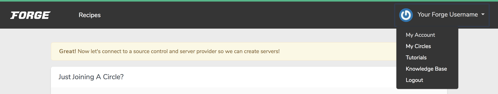
Navigate to the Source Control section:
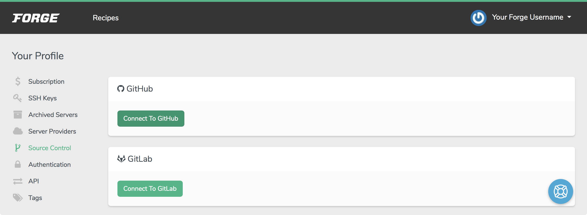
Choose your source control provider. Your browser will navigate to the source control provider’s website, where an authorization prompt will appear.
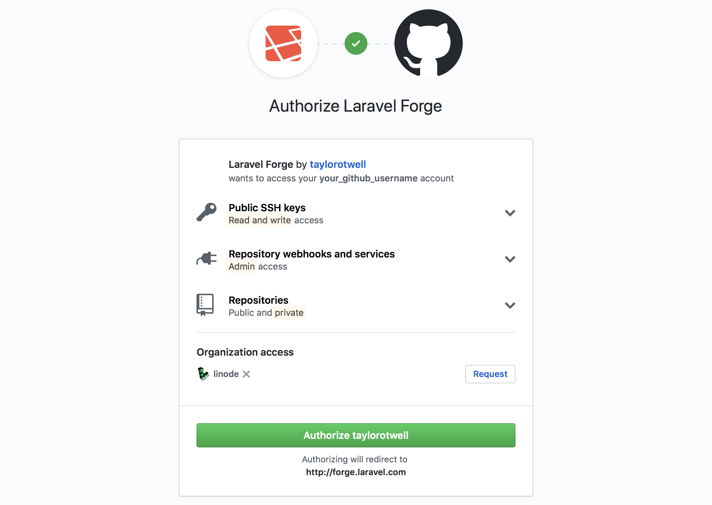
Confirm this authorization request. You will be returned to the Laravel Forge website.
Adding your Linode API Key to Forge
From the My Account page, navigate to the Server Providers section. Select Linode Cloud:
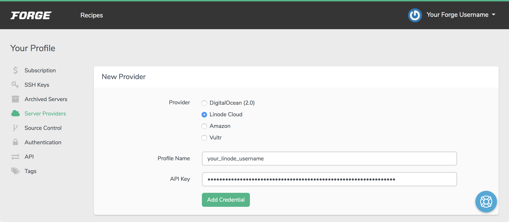
Enter a profile name. This can be your Linode username or it can be any other string that will help you identify the profile. Then, enter your APIv4 key and click the Add Credential button.
Create a Server
Click on the Forge icon in the top left navigation menu. Then click on the Linode provider button.
Fill out the form that appears:
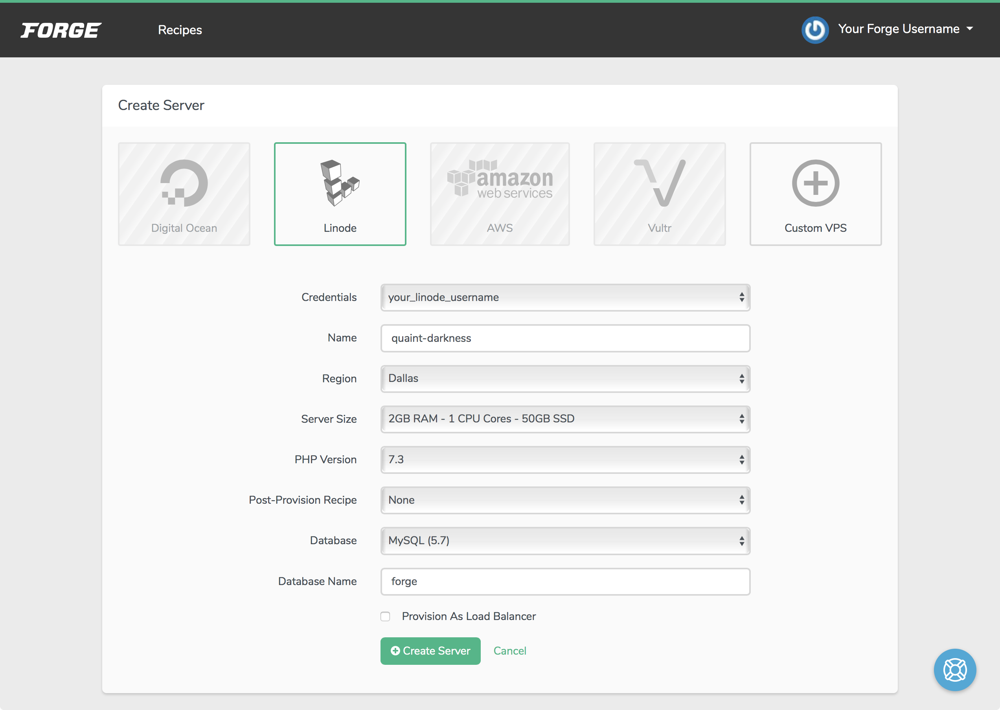
Option Description Credentials Any of the Linode accounts that you have linked to your Laravel Forge account. Name A name for your server. Laravel Forge auto-generates a random name, but you can edit it. Region The data center where you want your server hosted. Choose a location close to where you expect the majority of users to be. Server Size The hardware resource plan for your server. Plans with more CPU and memory can serve more connections to your sites, and a larger storage capacity can hold bigger databases. PHP Version The PHP version to install. Post-Provision Recipe Actions that should be taken after the server is provisioned. Database The database package to install. Database Name Your application’s database name. By default it’ll be named forge.Once you have finished selecting options, click Create Server. A pop-up dialog will show you the sudo and database passwords that have been automatically generated for you. Be sure to copy these values and store them in a secure place.
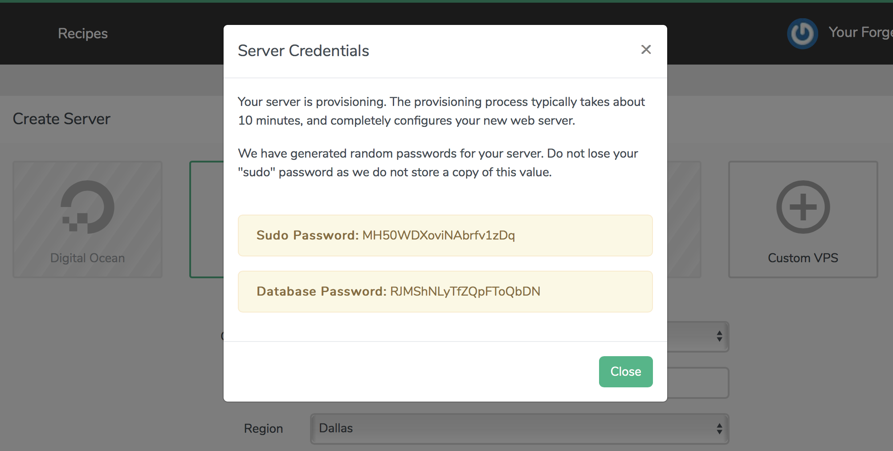
Forge will now perform the steps necessary to create and configure a Linode based on the settings you provided. The new server will appear in the Active Servers section, and a list of recent events representing the server’s configuration will appear below it.
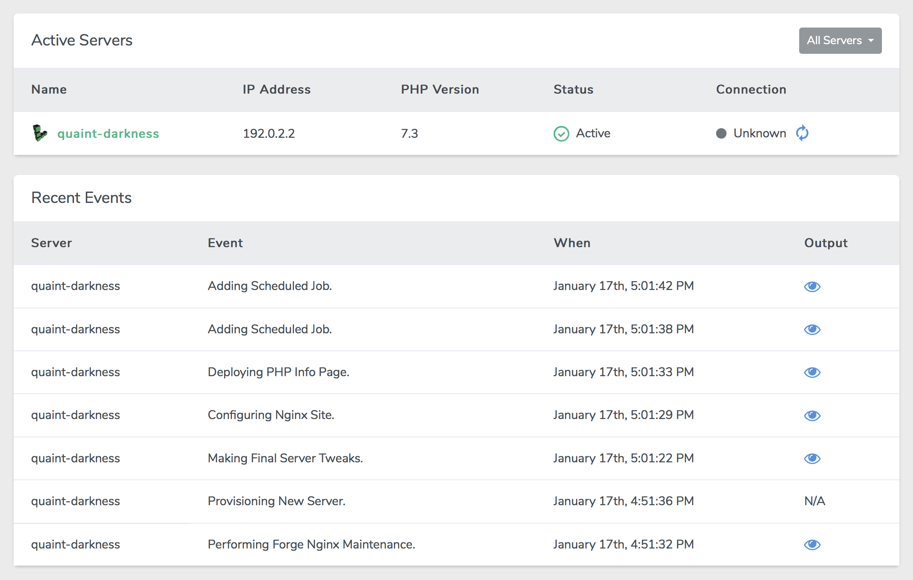
When the server has been fully provisioned the Status of the server will be Active. Navigate to the public IP address of your new Linode in a browser, and you will see the PHP settings active for the server:
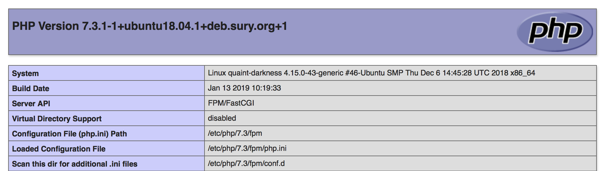
When the setup process has completed you will also receive an email containing details about your new server:
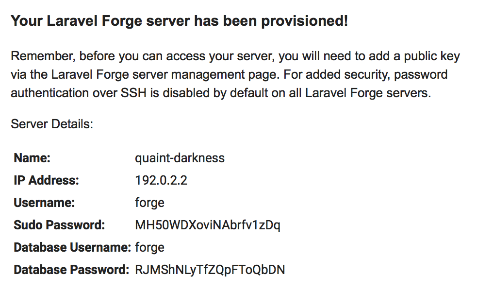
Set Up your Site
Your server has been created, but no sites have been set up on it, apart from the default site which displays your PHP settings.
NoteIf you do not want to use a domain with your website, you can configure the default site on your server. Select the default site from the Active Sites panel of your server’s dashboard in Forge, then skip to the Add a repository instructions.
Add a New Site
Set up your DNS records for your domain. Create a Domain Zone and an A record assigned to your Linode’s IP address. If you use Linode’s name servers, review the DNS Manager guide for instructions.
If you use another DNS provider, check their documentation for instructions.
 Updating DNS records at common nameserver authorities
The following support documents describe how to update DNS records at common nameserver authorities:
Updating DNS records at common nameserver authorities
The following support documents describe how to update DNS records at common nameserver authorities:From the Servers menu in the top navigation bar, choose your new server. If you don’t see this menu yet, refresh your browser window:
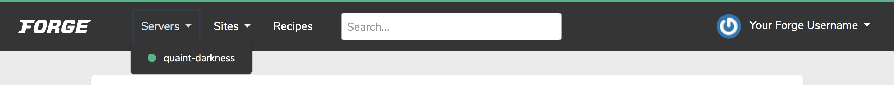
Fill out the New Site form and then click the Add Site button:
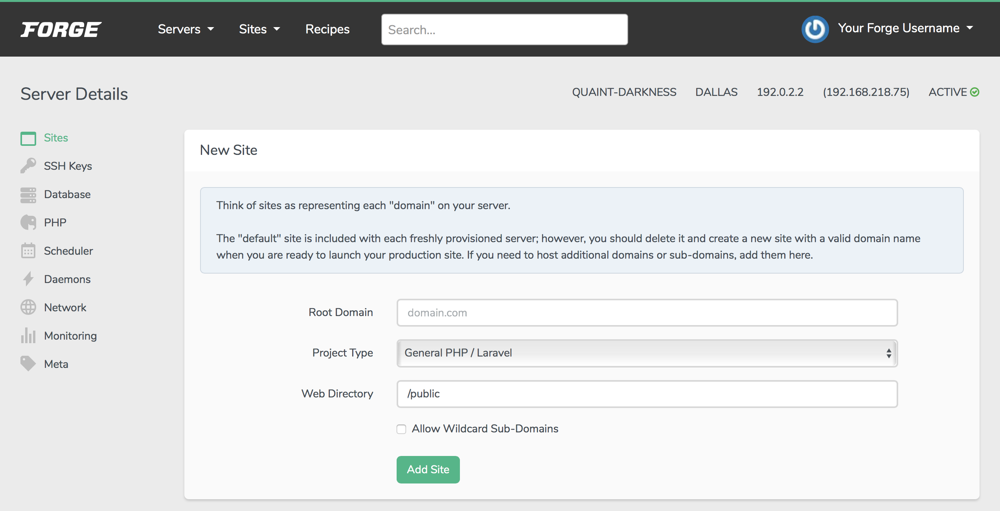
Option Description Root Domain Your website’s domain. Project Type Your project type. If you are building regular PHP, you can choose General PHP/Laravel. Other options include Static, HTML, Symfony, and Symfony (Dev).Web Directory The directory from which public files will be served. You will need to make sure your website’s files are in this directory in your source code repository. Your new site will appear below the form in the Active Sites panel:
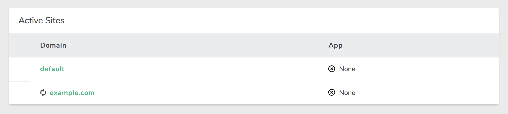
Add a Repository
From the Active Sites panel, click on your site. The Apps section will appear:
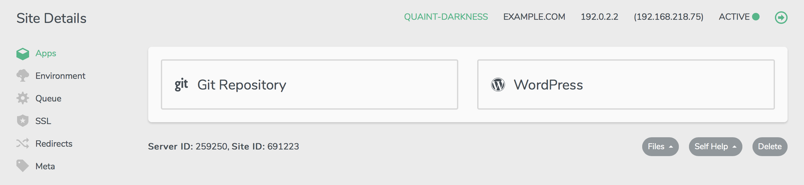
Select the Git Repository option and fill out the form that appears. The format for the Repository field should be
source_control_username/repository_name. Laravel Forge will pull your code from the branch that you enter.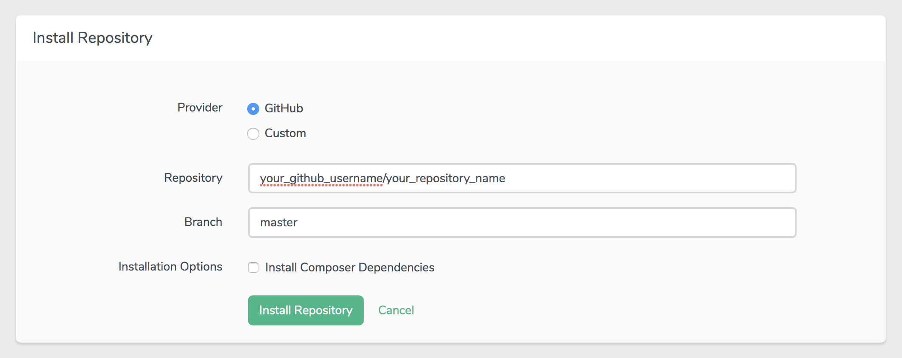
Note
If you do not use Composer, leave the Install Composer Dependencies option disabled, as it will cause errors for your deployment if enabled.Click on the Install Repository button. Forge will copy your source code to the server. When this finishes, visit your domain name in your browser, and you should see your site’s contents.
If your site deployment runs into any errors, a Server Alerts panel will appear. Click on the information button in this panel to review the errors in detail.
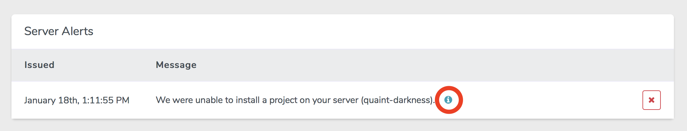
Verify that your site displays your repository’s latest changes by navigating to your site’s URL. If you did not register a Domain, then navigate to your site’s IP address.
Quick Deploy
Forge can automatically deploy updates to your server whenever you push new code to your application’s repository.
From the Apps section of your site’s dashboard in Forge, click Enable Quick Deploy:
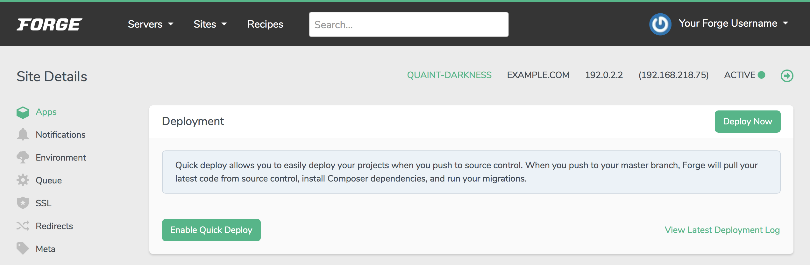
Make changes to your project’s code and push them to your repository service. Your live site will be updated to reflect the changes.
Adding SSL to your Domain Name
SSL (Secure Sockets Layer) is the standard security technology for establishing an encrypted link between a web server and a browser. To add SSL:
Navigate to the SSL section of your site’s dashboard in Forge.
If you already have an SSL certificate, click on Install Existing Certificate. Otherwise, select the Let’s Encrypt option:
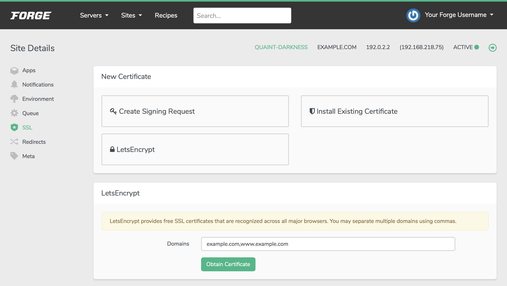
Note
Let’s Encrypt is a free and widely-trusted SSL certificate authority.If you choose to use Let’s Encrypt, verify that the domains you want to secure are listed correctly and click Obtain Certificate.
More Information
You may wish to consult the following resources for additional information on this topic. While these are provided in the hope that they will be useful, please note that we cannot vouch for the accuracy or timeliness of externally hosted materials.
Join our Community
Find answers, ask questions, and help others.
This guide is published under a CC BY-ND 4.0 license.